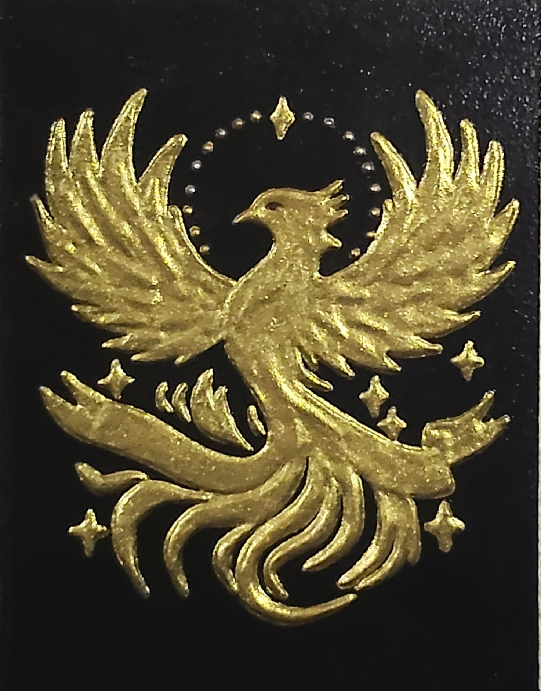

NICOLETA FILIP ART
FÉNIX
Representación ornamental de un fénix alado en ascenso, ejecutado en relieve dorado sobre fondo negro, acompañado de motivos estelares y llamas.
Sobre la obra
FÉNIX presenta una composición simbólica y ornamental protagonizada por un fénix de cuerpo erguido y alas completamente desplegadas, representado en actitud ascendente.
La figura está ejecutada en relieve dorado sobre fondo negro y se acompaña de elementos decorativos en forma de estrellas y destellos, además de una base de llamas estilizadas.
Presentación artística
La composición refuerza la idea de renacimiento, energía y transformación mediante la posición ascendente del ave y la presencia de las llamas en la zona inferior.
El tratamiento de las plumas y de las llamas mediante formas curvas y superpuestas aporta dinamismo y una marcada presencia escultórica al conjunto.
Ficha técnica
- Año
- 2026
- Dimensiones
- 30 × 40 cm
- Soporte
- Madera
- Técnica
- Técnica estándar.
- Categoría
- Fauna
Si deseas recibir información sobre esta obra, puedes solicitarla directamente.
SOLICITAR INFORMACIÓN →